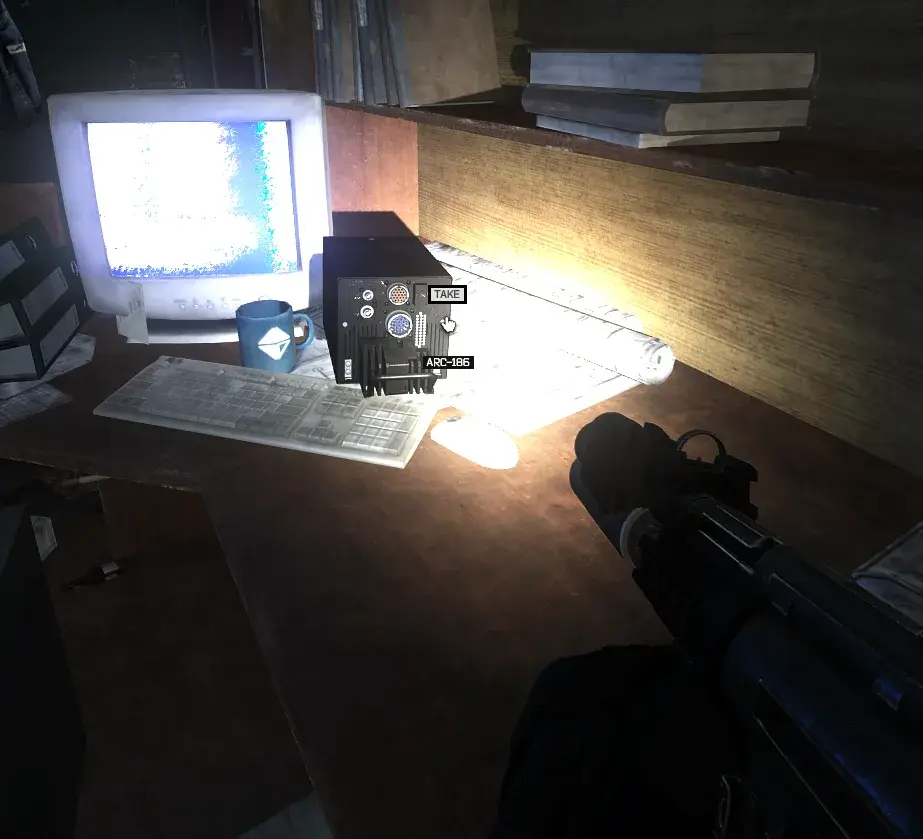
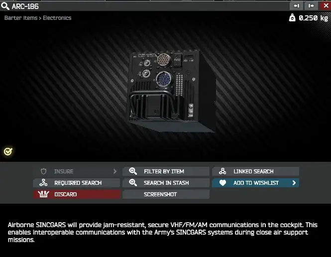
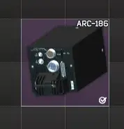
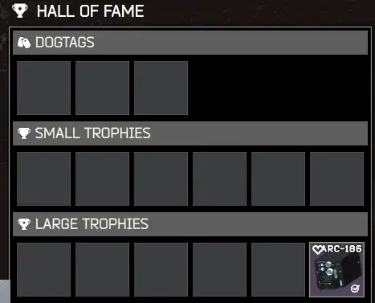
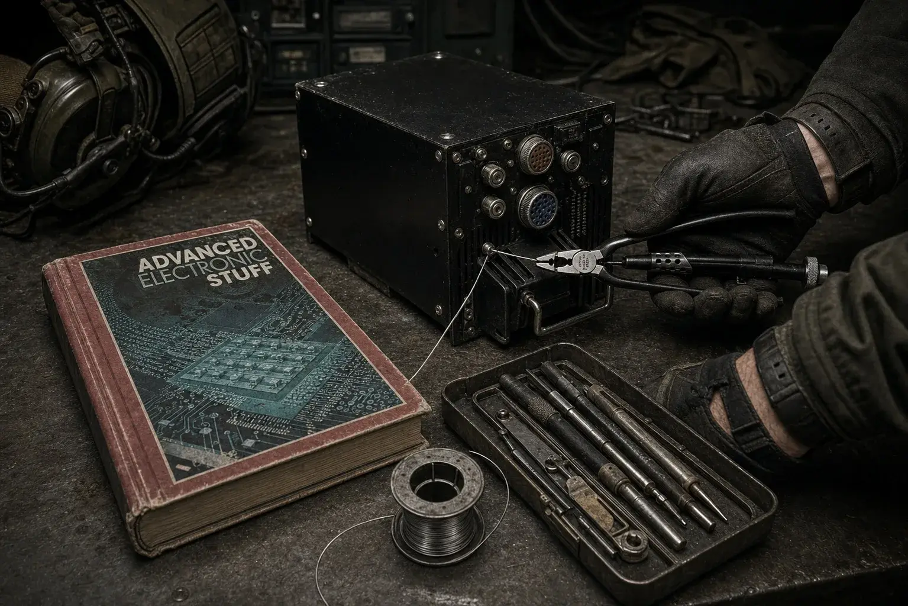
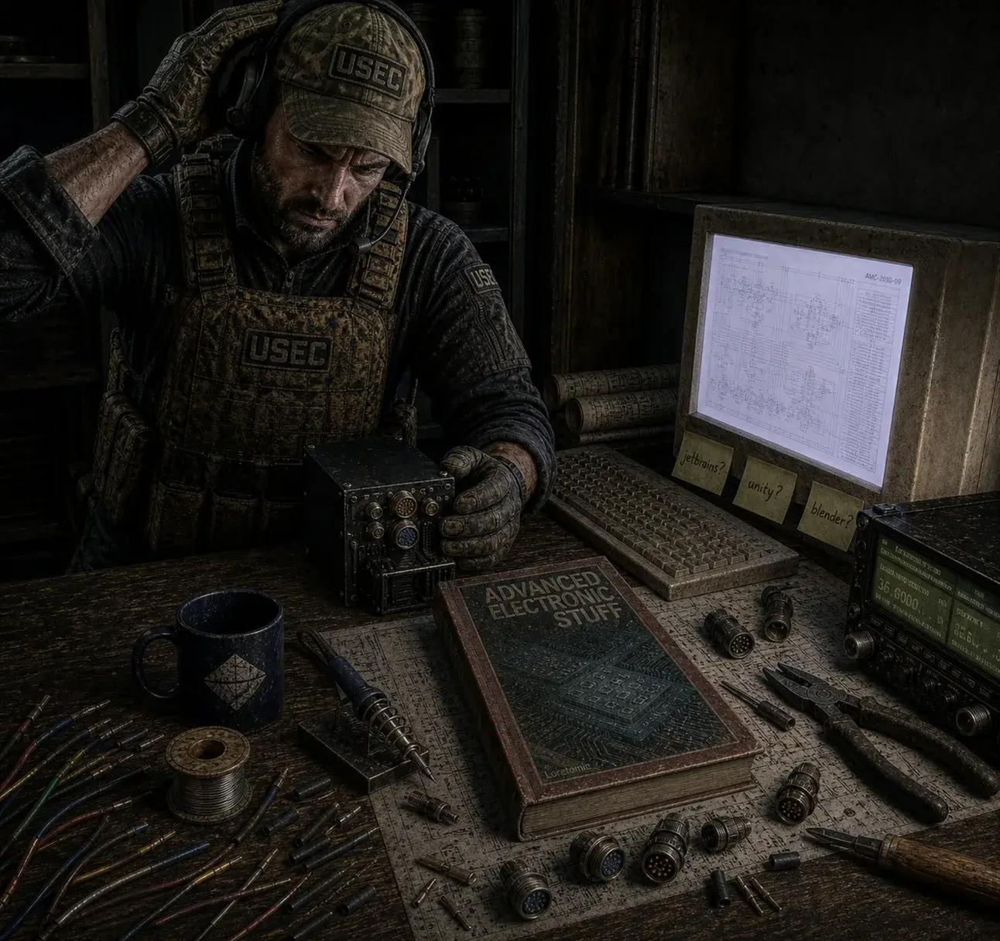

Integrated Avionics
- Downloads
- 723
- Favourites
- 4
- Mod lists
- 9
Walkthrough: https://www.youtube.com/watch?v=8qij_OSTWIQ part 1 and https://www.youtube.com/watch?v=7Bele-Nxsqg&t=5s part 2
Have you ever wanted more military tech in EFT? Do you think airplanes are pretty cool? Well, I do, and that’s exactly why I made this mod.
The AN/ARC-186 R/T is an airborne radio transceiver used for VHF/FM/AM communications. This mod adds it to SPT as a custom electronics item with its own model, bundle, questline, recovery path, and hideout craft.
Now includes the Integrated Avionics questline for Mechanic. Work through the questline to recover the ARC-186, install the required components, and reap the benefits of your skilled labor.
This is my first Tarkov/SPT mod, built as a learning project for custom item cloning, Unity asset bundles, custom quests, loot spawns, hideout recipes, and server-side SPT 4 modding.
Current features:
- Custom ARC-186 item
- Custom model and asset bundle
- 2x2 electronics barter item
- Hall of Fame large trophy compatibility
- Integrated Avionics questline for Mechanic
- ARC-186 recovery path during the questline
- Guaranteed AEM recovery spawn to prevent quest soft-locks
- Mystery rewards
- ARC-186 hideout craft unlocked after completing Integrated Avionics - Part 2
- Rare ARC-186 loose loot integration around COFDM-style spawn locations
Known issue:
- ARC-186 and AEM recovery spawns may continue appearing after quest completion. This is intentional for v1.0.3 to avoid quest soft-locks and will be refined in a future update.
- If the ARC-186 hideout craft does not appear immediately after turning in Part 2, clear your SPT user cache and restart the server/client.
Installation
To install, unzip and drop the Spys_ARC-186 folder into your SPT/user/mods folder.
The final path should look like:
SPT/user/mods/Spys_ARC-186
Dependencies
This mod requires:
- WTT - CommonLib
- Epic’s All in One
- Impractical Tactical
Screenshots






Version
1.0.3
ARC-186 v1.0.3
Adds Integrated Avionics questline for Mechanic. Adds Birdeye ARC-186 recovery path during the questline. Adds guaranteed AEM recovery spawn at the quest desk to prevent quest soft-locks. Adds Birdpipe poster reward and hideout wall placement support. Adds ARC-186 hideout craft unlocked after completing Integrated Avionics - Part 2. If the hideout craft does not appear immediately after turn-in, clear SPT user cache and restart the server/client. Known Issue
ARC-186 and AEM recovery spawns may continue appearing after quest completion. This is intentional for v1.0.3 to avoid quest soft-locks and will be refined in a future update.
Version
1.0.2
Adds Hall of Fame support.
Changes:
- ARC-186 can now be placed in Hall of Fame large trophy slots.
Version
1.0.1
Version 1.0.1 updates ARC-186 item properties. This release changes the item size from 2x1 to 2x2 and updates the item weight to 3.18 kg.
Version
1.0.0
Initial release.
Adds the AN/ARC-186 R/T as a custom electronics barter item for SPT 4.0.13.
Includes:
- Custom item entry
- Custom model and asset bundle
- Electronics/barter item category